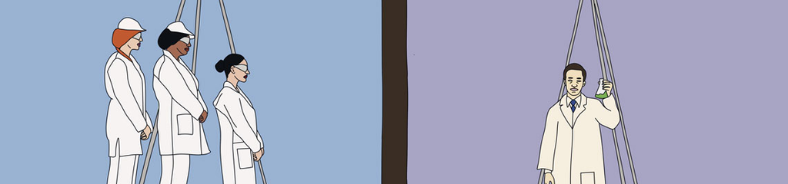

A Sociologia é a ciência humana que estuda a sociedade, as relações sociais, a cultura e as instituições que organizam a vida coletiva. Ela busca compreender como os comportamentos individuais são influenciados pelo meio social e como as desigualdades, o trabalho, a política e os movimentos sociais transformam o mundo contemporâneo.
O que é Sociologia?
Notícias de Sociologia
Voltar para Disciplinas Ir para Geografia01. Impacto das Redes Sociais na Socialização Juvenil (Sociologia)
Como algoritmos e plataformas digitais redefinem os laços sociais contemporâneos.
Ler detalhes03. Precarização do Trabalho e a Economia de Aplicativos (Sociologia)
Análise sociológica sobre a uberização e os novos modelos de trabalho informal.
Ler detalhes
05. Desigualdade de Gênero no Mercado de Tecnologia (Sociologia)
Dados revelam os desafios da representatividade feminina nas áreas de exatas e TI.
Ler detalhes07. O Fenômeno da Indústria Cultural e o Consumo de Massa (Sociologia)
Uma reflexão atual sobre os conceitos de Adorno e Horkheimer no streaming.
Ler detalhes09. Movimentos Sociais Urbanos e o Direito à Cidade (Sociologia)
A luta por moradia digna e transporte público acessível nas periferias.
Ler detalhes11. Estratificação Social e Mobilidade no Brasil Atual (Sociologia)
O papel da educação técnica e superior na ascensão socioeconômica.
Ler detalhes13. Fake News, Pós-Verdade e Polarização Política (Sociologia)
Como a desinformação afeta a democracia e o debate público.
Ler detalhes15. Etnocentrismo e Relativismo Cultural na Sociedade Global (Sociologia)
A importância do respeito à diversidade cultural em um mundo conectado.
Ler detalhes17. Violência Simbólica nas Instituições Sociais (Sociologia)
Como padrões culturais reproduzem desigualdades invisíveis segundo Bourdieu.
Ler detalhes19. Juventude e Participação Política no Ensino Médio (Sociologia)
O papel dos grêmios estudantis na formação cidadã dos jovens.
Ler detalhes21. Racismo Estrutural e Políticas de Ações Afirmativas (Sociologia)
Os resultados da Lei de Cotas nas universidades públicas brasileiras.
Ler detalhes23. Modernidade Líquida e a Fragilidade das Relações Humanas (Sociologia)
Os conceitos de Zygmunt Bauman aplicados ao cotidiano moderno.
Ler detalhes25. Inteligência Artificial e o Futuro das Profissões (Sociologia)
Os impactos sociais da automação na indústria e nos serviços.
Ler detalhes